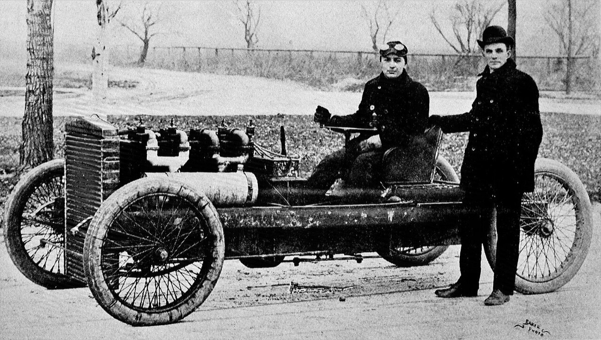
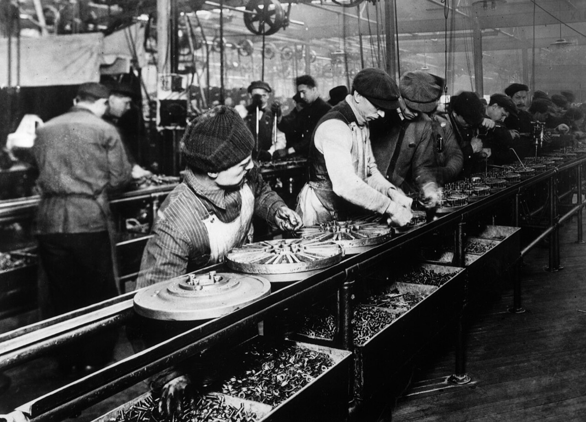
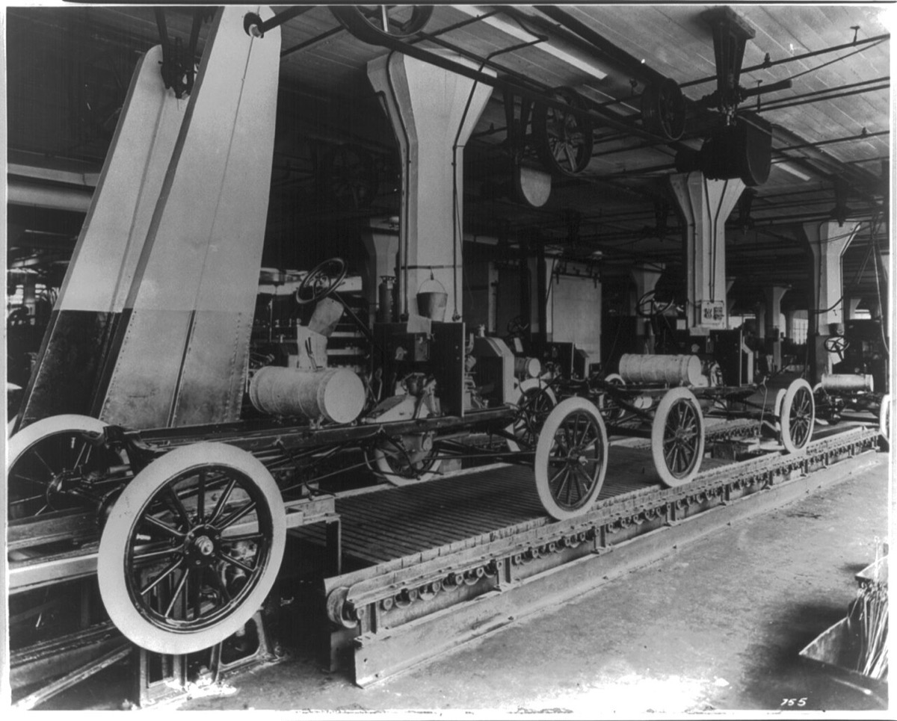
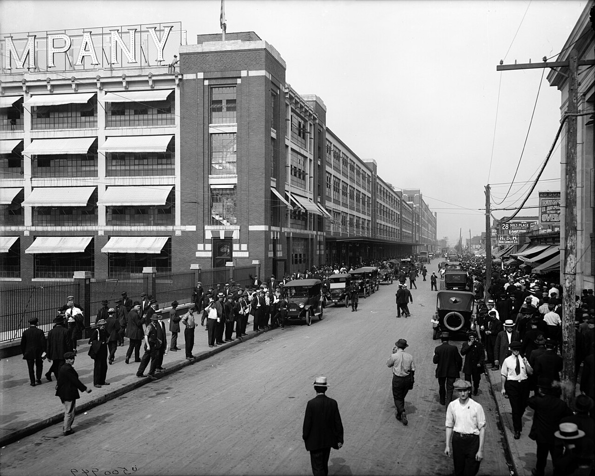
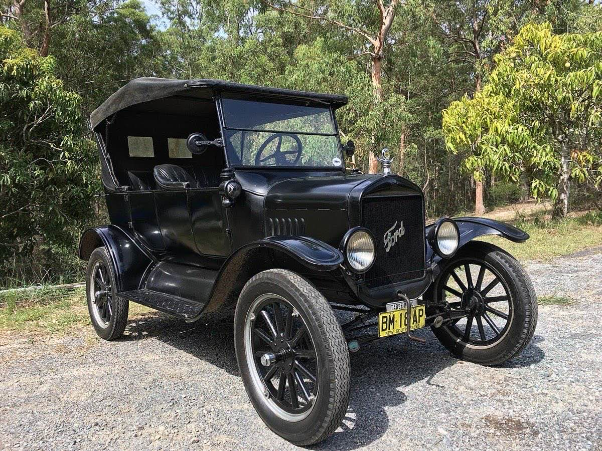
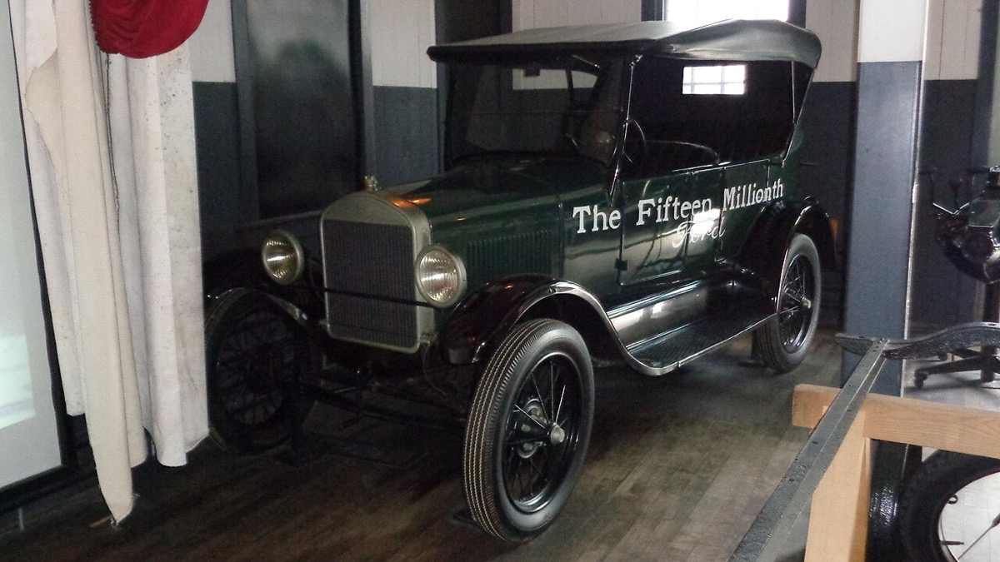
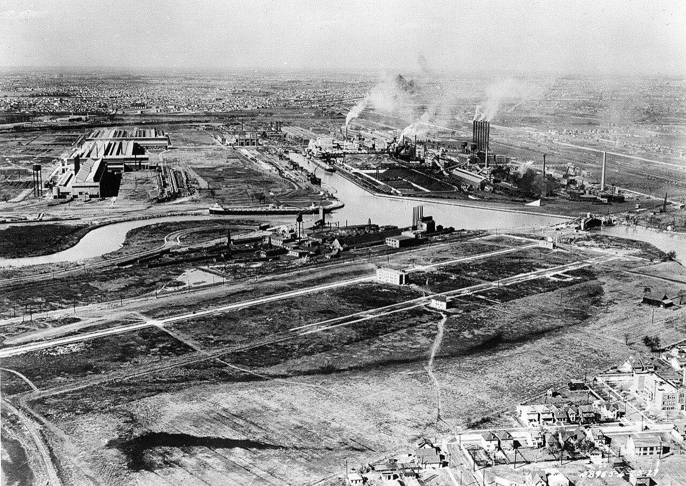

読者が決める対象は二つである。第一に高賃金を操業安定のコストとして導入するかを、$5日給（当時のレートで約10円、今の物価で約3.4万円）が離職を圧縮したかという因果で検討する。第二に、単一SKUと現金販売をいつ破棄するかを、店あたり出荷とディーラー採算の悪化が流通制約として起きたかという因果で検討する。購買力主因と技術相対寄与は、必要な比較表が無いため本ページでは判定しない。主張1・2とも、交絡と比較系列が足りず因果は判定不能とする。
改稿日 2026年11月11日（初稿 2026年9月26日）。数値の基準日は改稿日。故人のため、出典のない私生活の評価は書かない。年表の満年齢は生年月日1863年7月30日からの年差で算出している。没後の項目は年差表記である。Model T の価格は車体型式（Touring / Runabout）で年次表が割れるため、表で併記する。
先に結論を置く。
1. $5日給（当時のレートで約10円、今の物価で約3.4万円）は離職を圧縮したか（因果・判定不能）。年次離職率は1913年370%から1914年54%、1915年16%へ下がった539。これは前後比較であり、$5日給単独の因果は検証しない。交絡候補は1913年秋の労務改革と景気後退である。発表前の月次一次が無く、寄与比率を分離できない39。受給は利益分配で、1914年4月時点で約40%が未受給だった40。購買力主因の比較も判定不能である。
2. 単一仕様・現金販売が流通を制約したか（因果・判定不能）。米国・全車両の工場生産は1923年2,120,898台から1926年1,651,424台へ減り、販売店は約8,500から約9,800へ増えた4241。店あたり出荷が細る中で、1926年にディーラーの約7割が赤字、約3分の1が交代した（二次・報道整理・single-source）41。これらは同時観測であり、単一仕様・現金販売が招いたという因果までは分離できない。比較対象の Chevrolet 網の赤字率一次が無く、技術相対寄与も判定不能である934。
読者と判断：高賃金を操業安定コストとして入れるかを、$5日給（当時のレートで約10円、今の物価で約3.4万円）が離職を圧縮したかという因果で検討できる。単一SKUと現金販売を破棄する時点についても、店あたり出荷とディーラー採算の悪化が流通制約として起きたかを検討できる。ただし本ページでは主張1・2とも因果判定は不能である。
分解：物理的制約は Highland Park のタクトタイムと部品互換性である。組立時間は1913年夏の約12.5時間から同年12月の2時間38分へ短縮された（Nevins）。通説の12時間28分→1時間33分は洗練後の数値で諸説である203。お金の流れは車体価格と日給である。日給は基本給と利益分配に分かれ、離職に伴う再配置・訓練費と株主配当が加わる。利得の帰属は本人・少数株主・組立工・ディーラーに分かれる。法と強制力は Sociological Department のボーナス保留と、のちの州・連邦の労働法である。時間は Model T のモデル寿命（1908–1927）と、嗜好・信用販売の周期のずれである。
日付が一次情報または複数報道で確定した出来事だけを並べた。各項目は事実、具体、なぜ後を決めたかの3層である。期のボタンで絞り込める。日付の右は、その時点の満年齢である。
章立ては主張から導く。I は物理の前提。II は主張1の因果。III は主張2の因果。IV は両主張のあとの帰結である。年表は②に置き、ここでは検証だけを書く。
生年月日は1863年7月30日。生地はミシガン州ウェイン郡グリーンフィールド・タウンシップの農家である。1879年に16歳でデトロイトへ出て機械工見習いとなり、1891年に Edison Illuminating Company of Detroit、1893年に主任技師となった114。1896年6月4日、自宅の物置で Quadricycle を完成させた15。
Detroit Automobile Company は1899年8月に設立され1901年1月に解散した。出荷は約20台だった。Henry Ford Company は1901年11月に設立され1902年3月に離脱し、のち Cadillac となった。そのあと1903年6月16日に資本金 $28,000（当時のレートで約5.6万円、今の物価で約2.3億円）・株主12人で Ford Motor Company を設立した21617。1901年のレース勝利と1904年1月12日の速度記録 91.37 mph は、資金調達の公開実験として機能した（速度記録は single-source に近い）18。

1908年10月1日に Model T の生産・販売が始まる。初年価格は Runabout が $825（当時のレートで約1,700円、今の物価で約580万円）である。Touring は $850（当時のレートで約1,700円、今の物価で約600万円）である。1910年に Highland Park へ本格移転し、1913年10月前後にシャーシの移動組立ラインが稼働した。Nevins は夏の組立労働時間約12.5時間から、1913年12月に2時間38分へ短縮したと書く。通説の「12時間28分→1時間33分」は洗練後の数値で諸説である3420。工程の単純化は、熟練の代替を進めると同時に、欠員1人の影響をライン全体へ広げた。ここが主張1の物理前提である。


検証する命題は、「$5日給が離職率を圧縮したか」である。交絡候補は1913年秋の労務改革と景気後退である。購買力主因の比較は監査表が無いため判定しない。1914年1月5日、会社は日給 $5（当時のレートで約10円、今の物価で約3.4万円）・8時間労働を発表した。それ以前の代表値は日給約 $2.34（当時のレートで約4.7円、今の物価で約1.5万円）・9時間である。内訳は基本給の据え置きと、条件付きの利益分配である5。
| 年 | 平均在籍 | 離職 | 離職率 | 出典 |
|---|---|---|---|---|
| 1913 | 13,623 | 50,448 | 370% | Slichter（Raff & Summers 再掲）39 |
| 1914 | 12,115 | 6,508 | 54% | 同39 |
| 1915 | 18,028 | 2,931 | 16% | 同39 |
The Henry Ford は、離職率約370%を「訓練の費用が高い」問題として書き、別ページでは約380%とも記す（諸説）56。会社側の設計意図は離職圧縮である。

受給は無条件ではなかった。受給には年齢・扶養・勤続の条件があった。Sociological Department（1914年拡充。John R. Lee、のち Samuel S. Marquis）が家庭を訪問し禁酒・貯蓄・住居を調べた。違反があればボーナス分を保留した。Meyer によれば、調査が完了した1914年4月時点で約40%が利益分配を受けていなかった。会社の発表では「直ちに全従業員の90%が対象」とされていたが、基準の適用後に除外が広がった40。Lee（1916）は次の受給率を書く。6か月後は69%。1年後は87%。1916年半ばは90%である39。
交絡について、Raff & Summers は1913年秋の改革と景気が離職低下の一部を説明しうると書く39。発表前の月次一次は示されておらず、改革・景気・$5の寄与比率は分離できない。年次の370%→54%→16%は前後比較であり、$5日給単独の因果を検証しない。純訓練費の節約は賃上げコストの約6〜19%にとどまるため、費用対効果も欠員・配置替え・士気を含めないと説明しきれない39。主張1の判定は不能である。判定に必要なのは、1913年10月–1914年1月の月次離職率一次と、$5を導入しない同規模組立工場の同時期系列である。購買力主因の比較は、従業員購入の監査表が無く判定不能である。価格低下は $5 発表以前から続いており、1913年 Runabout は既に $525（当時のレートで約1,100円、今の物価で約330万円）である3。
1919年の少数株主買収（総額 $1億超・諸説。当時のレートで約2.0億円超、今の物価で約3,100億円超）と Dodge v. Ford 判決のあと、Ford 家の完全支配が確定した722。同族支配が単一SKU維持を延ばしたかという因果は、支配前後のモデル変更時期と株主牽制の比較系列が無く、本ページの主張としては立てない。
検証する命題は、「単一仕様・現金販売の維持が、店あたり出荷の減少とディーラー採算の悪化を招いたか」である。比較対象は年次更新と GMAC を持つ Chevrolet 網である。技術相対寄与は判定しない。Sloan の回顧では1921年の米国シェアは次のとおりである。Ford は乗用車・トラックで約60%。GM は約12%。Chevrolet 単体は約4%だった9。1925年に Ford のシェアは約45%へ相対低下した9。


観測された系列は次のとおりである。The Henry Ford が整理する米国・全車両の工場生産（乗用車＋トラック等。Nevins & Hill）は、1923年が2,120,898台、1926年が1,651,424台である。乗用車のみでは1923年1,817,891台、1926年1,368,383台である42。販売店は約8,500から約9,800へ増えた（二次・報道整理）41。生産が減る一方で店舗が増え、店あたり出荷は細る。1926年にはディーラーの約7割が赤字となり、約3分の1が交代した（二次・報道整理・single-source）41。
比較対象の Chevrolet 網は年次モデルチェンジと GMAC（1919年設立）による分割払いを揃えた。Ford 側は現金販売に近く、ボディと装備の年次更新を拒み続けた349。反証条件の「店舗を減らして店あたりを維持」は起きていない。ただし生産減・店舗増・Ford 側の赤字は同時観測であり、単一仕様・現金販売が招いたという因果はここから分離できない。Chevrolet 側の赤字率の一次比較が無く、技術相対寄与の単位走行コスト比較も無い。主張2の判定は不能である。判定に必要なのは、1926年の Chevrolet ディーラー赤字率の一次集計と、同一金融条件での単位走行コスト比較である。
1927年5月26日、Model T の米国生産は終了した（累計1,500万台超）。切替空白期に Chevrolet が販売で先行した326。
River Rouge は原料から完成車までを同一敷地で扱う垂直統合の工場である。

Fordlândia は1928年にブラジル・アマゾンに開設したゴム農園である。The Henry Ford は投下総額を約 $2,000万（当時のレートで約4,300万〜8,500万円、今の物価で約750億〜850億円）と書く。1945年のブラジル政府への譲渡額は約 $250,000（今の価値で約6.7億円、米国の物価で換算）と書く。NYRB 書評は売却額 $244,200（今の価値で約6.5億円）とも記す（諸説）。回収率は約1.2%（推定）1228。
1918–1927年の The Dearborn Independent と The International Jew は、Sapiro 訴訟（1925–1927）と1927年の謝罪・廃刊に至った。1938年7月30日にはナチス・ドイツから Grand Cross of the German Eagle を受章した。販売台数への監査済み因果分解は本ページでは扱わない（非開示）1011。
労務の画期は次の3件である。1932年3月7日の Ford Hunger March（死者4人、のち5人）。1937年5月26日の Battle of the Overpass。1941年6月の UAW 契約（Big Three で最後）である293031。Willow Run は B-24 を累計 8,685機（完成 6,792＋ノックダウン 1,893）生産し、ピーク時は約63分に1機だった。主張1・2の因果判定には使わない32。
1943年5月26日に息子 Edsel が死去し、80歳の本人が社長に復帰した。1945年9月21日、孫 Henry Ford II が社長に就任した。就任時の会社は月約 $900万–$1,000万（今の価値で約240億〜270億円、米国の物価で換算）の赤字だったと二次資料が書く（諸説）1333。本人は1947年4月7日に Dearborn で死去した。
主張1・2の因果判定に使う系列を先に置き、価格は補助として置く。生産台数の年は The Henry Ford の暦年系列に合わせる。
| 暦年 | Runabout | Touring | 日本円（今の物価。Runabout / Touring） | 米国生産（台） | 注 |
|---|---|---|---|---|---|
| 1912 | — | — | — | 170,211 | 乗用車。THF 暦年42 |
| 1913 | $525 | — | 約330万円 / — | 202,667 | 組立ライン導入。価格は MTFCA424 |
| 1914 | $440 | $550 | 約300万円 / 約380万円 | 308,162 | $5 Day 発表年424 |
| 1915 | — | — | — | 501,462 | 乗用車。THF 暦年42 |
| 1916 | $345 | $360 | 約230万円 / 約240万円 | 735,020 | 全車両（乗用車734,811）424 |
| 1923 | $364 | — | 約120万円 / — | 2,120,898 | 全車両（乗用車1,817,891）424 |
| 1925 | $260 | $290 | 約100万円 / 約110万円 | 2,024,254 | 全車両。Runabout 最低近傍423 |
| 1926 | — | — | — | 1,651,424 | 全車両（乗用車1,368,383）42 |
| 1927 | $360 | — | 約130万円 / — | 518,401 | 全車両。5/26 Model T 終了423 |
生産台数は The Henry Ford の米国暦年系列（Nevins & Hill）に統一した。旧稿で1913年に置いていた170,211台は1912年、1914年に置いていた202,667台は1913年、1916年に置いていた501,462台は1915年の値である。価格は MTFCA / 通説のモデル年次であり、生産の暦年と列を分けて読む。
| 項目 | 数値 | 日本円（今の物価） | 時点・条件 |
|---|---|---|---|
| Five Dollar Day | $2.34→$5 | 約1.5万円→約3.4万円 | 1914-01-05・9h→8h5 |
| 離職率1913–15 | 370→54→16% | — | 年率・Slichter39 |
| 未受給1914-04 | 約40% | — | Meyer・調査完了時40 |
| 訓練費節約の寄与 | 約6–19% | — | Raff 試算・賃上げコスト比39 |
| Ford 米国シェア | 約60% | — | 1921・乗用車+トラック9 |
| ディーラー赤字 | 約70% | — | 192641 |
| ディーラー交代 | 約1/3 | — | 192641 |
| Model T 累計 | 1,500万台超 | — | 1908–19273 |
| Fordlândia 投下/売却 | $20M / $244–250k | 約750億〜850億円 / 約6.5億〜6.7億円 | 1945・諸説12 |
| Willow Run B-24 | 8,685機 | — | 〜1945-06-2832 |
主張の反証条件に近い失敗と、金額が残る案件に限る。
$5（当時のレートで約10円、今の物価で約3.4万円）が離職を圧縮した因果は判定不能である。年次の低下は前後比較にすぎず、交絡（1913年秋改革・景気）の寄与比率は月次一次が無く分離できない。純訓練費の節約は賃上げコストの約6〜19%にとどまる39。購買力主因の比較は監査表が無く判定不能である。Sociological Department は1921年頃に縮小・解散へ向かった5。
単一SKU・現金販売が流通を制約した因果は判定不能である。赤字率・交代率は二次・報道整理（single-source）であり、生産減・店舗増との同時観測にとどまる。1927年の Rouge 閉鎖は切替遅延の一括コストである941。Chevrolet 網の赤字率一次と、技術相対寄与を分離する単位走行コスト比較が無い。
投下約 $2,000万（当時のレートで約4,300万〜8,500万円、今の物価で約750億〜850億円）。売却約 $244,200–$250,000（今の価値で約6.5億〜6.7億円、米国の物価で換算）。回収率約1.2%（推定）。葉病と単一栽培が重なった。労働争議と適地選定の失敗も加わった。主張1・2の因果判定には使わない1228。
Hunger March（1932年）と Battle of the Overpass（1937年）が公的記録に残る。1941年まで UAW を拒み、Big Three で最後の組合契約となった。労務コストの単一監査額は非開示である2930。
Henry Ford II 就任前後、月約 $900万–$1,000万（今の価値で約240億〜270億円）の赤字（諸説）。戦時接収検討の記述も二次に残るが、実行されなかった1333。
欠落データ。次の系列は公開一次では揃っていない。1913年10月–1914年1月の月次離職率一次と、$5を導入しない同規模組立工場の同時期系列。従業員による Model T 購入台数の監査済み時系列。1926年の Chevrolet および Ford ディーラー損益の原票。同一金融条件での T と Chevrolet の単位走行コスト比較。Dearborn Independent の販売台数への地域別効果である。
主張の因果に直結する範囲に限る。
賃金で稼働を買う設計。$5 Day（当時のレートで約10円、今の物価で約3.4万円）は離職を止める装置として設計され、受給を家庭調査条件付きの利益分配にした。離職圧縮の因果が成立したかは判定不能である514。
単一モデルを長く維持する。設計固定と価格低下の論理は残る。1923–26年に店あたり出荷とディーラー採算が悪化したのは観測できるが、それが流通制約の因果として確定したかは判定不能である1441。
主張の判定に使う発言に限った。英語原文を先に置き、訳を添える。
本文の主要な金額を、当時の円と今の円に直した。物価で見た値と給料で見た重みは分けて示す。
| 本文の金額 | 年 | 当時のレートで円 | 今の物価で円 | 給料で見た重み | 意味 |
|---|---|---|---|---|---|
| 資本金 $28,000 | 1903 | 約5.6万円 | 約2.3億円 | 約3.0億〜11億円 | 設立時の資本金は、日本の大卒相当初任給（月50円）の約94年分である。 |
| Model T Runabout $825 | 1908 | 約1,700円 | 約580万円 | 約850万〜2,700万円 | 初年価格は、日本の大卒相当初任給の約2.7年分である。 |
| 日給 $2.34 | 1913 | 約4.7円 | 約1.5万円 | 約2.1万〜6.3万円 | 同年の Runabout $525 は、この日給の約220日分に当たる。 |
| 日給 $5 | 1914 | 約10円 | 約3.4万円 | 約4.4万〜13万円 | 日本の大卒相当初任給（月約61円）の約6分の1を、1日で受け取る水準である。 |
| Model T Runabout $440 | 1914 | 約890円 | 約300万円 | 約380万〜1,200万円 | 日給 $5 の組立工が88日働けば支払える価格である。 |
| Model T Runabout $260 | 1925 | 約640円 | 約100万円 | 約220万〜290万円 | 1908年の初年価格 $825 の約3分の1まで下がった。 |
| 少数株主買収 $1億超 | 1919 | 約2.0億円超 | 約3,100億円超 | 約7,300億〜2.1兆円超 | 同年に裁判所が命じた特別配当 $19.3M の約5倍を払い、Ford 家は完全支配を得た。 |
| 特別配当 $19.3M | 1919 | 約3,800万円 | 約600億円 | 約1,400億〜4,000億円 | 1914年の日給 $5 で換算すると、延べ約390万人日分の賃金に当たる。 |
| Fordlândia 投下 $2,000万 | 1928〜1941（両端で計算） | 約4,300万〜8,500万円 | 約750億〜850億円 | 約1,500億〜3,900億円 | 投下額は、1919年の特別配当 $19.3M の約1.04倍である。 |
| Fordlândia 売却 $244,200–$250,000 | 1945 | —（単一レートなし） | 約6.5億〜6.7億円（米国の物価で換算） | — | 回収できたのは投下額の約1.2%である。 |
| 月の赤字 $900万–$1,000万 | 1945 | —（単一レートなし） | 約240億〜270億円（米国の物価で換算） | — | 1か月の赤字が、Fordlândia の投下総額の約半分に当たる。 |
換算の方法。1941年以前のドルは、日本銀行百年史の円ドル相場の年中平均で当時の円にした。今の物価で見た値は、日本の消費者物価指数（1934〜36年=1）の2025年までの倍率を掛けた値である。給料で見た重みは、大卒相当初任給と巡査初任給の2025年までの倍率を掛けた幅である。明治と大正の大卒相当は同世代のごく一部であり、巡査との給料の差が今より大きかったため、二つの倍率は1.3〜3.6倍異なる。1942〜1948年は円ドルの単一レートが無いため、1945年の金額は米国の消費者物価の倍率と2025年の年平均レート（1ドル=149.6円）で円にした。
出典：日本銀行『日本銀行百年史』資料編（円ドル相場の年中平均、消費者物価指数） https://www.boj.or.jp/about/outline/history/hyakunen/data/hyakus_3_4.pdf ／ 総務省統計局 消費者物価指数 2024年年報 第17表 戦前基準5大費目指数 e-Stat ／ 総務省統計局 2025年基準消費者物価指数 第14表 e-Stat ／ 『値段史年表 明治・大正・昭和』抜粋（初任給） 新居浜市立図書館 ／ 厚生労働省 令和7年賃金構造基本統計調査 第10表 https://www.mhlw.go.jp/toukei/itiran/roudou/chingin/kouzou/z2025/dl/10.pdf ／ Federal Reserve Bank of Minneapolis「Consumer Price Index, 1800-」 https://www.minneapolisfed.org/about-us/monetary-policy/inflation-calculator/consumer-price-index-1800- ／ FRED AEXJPUS https://fred.stlouisfed.org/series/AEXJPUS